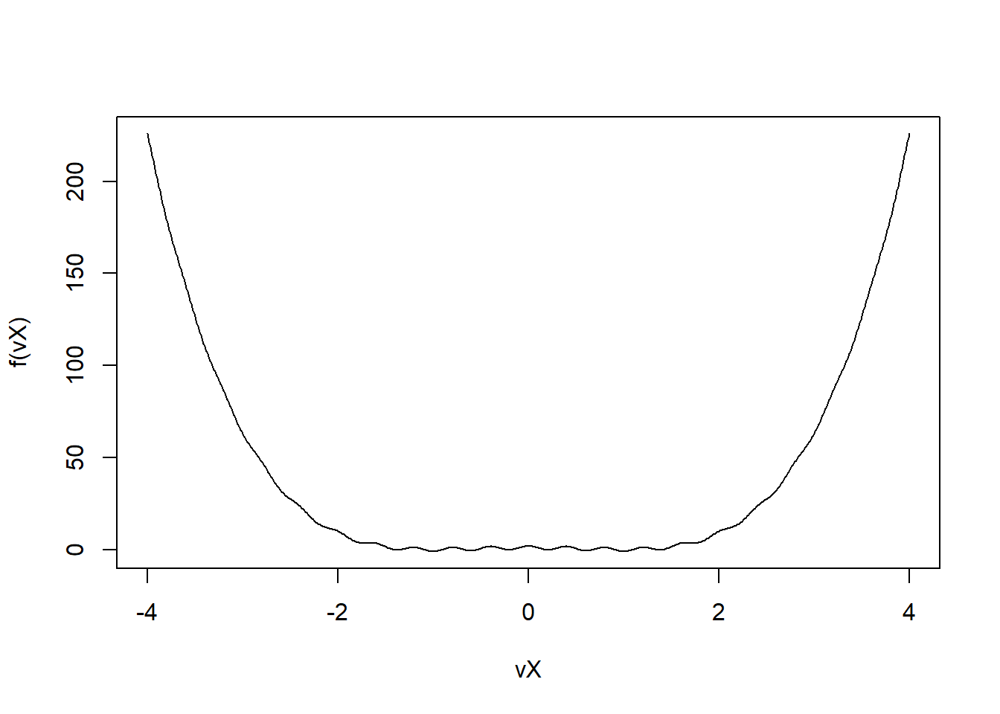

df_subset <- subset(iris, Species == "setosa" & Sepal.Length > 5.0)
df <- iris
df <- transform(df, Petal.Area = Petal.Length * Petal.Width)
agg_df <- aggregate(cbind(Sepal.Length, Petal.Area) ~ Species, data = df, FUN = mean)
agg_df[order(agg_df$Sepal.Length, decreasing = TRUE), ]
#> Species Sepal.Length Petal.Area
#> 3 virginica 6.588 11.2962
#> 2 versicolor 5.936 5.7204
#> 1 setosa 5.006 0.365629 Advanced exercises
30 Exercise Set 9: Advanced R, Data Manipulation, and Debugging
30.1 (1)
-
Data Frame Manipulation with
dplyr(if allowed, otherwise base R):- Load the built-in
irisdataset. - Filter the dataset to include only
Species == "setosa"andSepal.Length > 5.0.
- Filter the dataset to include only
- Create a new column
Petal.Areacalculated asPetal.Length * Petal.Width.
- Create a new column
- For each
Species, calculate the meanSepal.Lengthand meanPetal.Area.
- For each
- Arrange the results from (c) in descending order of mean
Sepal.Length.
- Arrange the results from (c) in descending order of mean
- (If
dplyris not allowed, use base R functions likesubset(),transform(),aggregate(),order()).
- Load the built-in
30.2 (2)
-
Working with Dates and Times (lubridate if allowed, otherwise base R):
- Create a character vector of dates:
vsDateStrings <- c("2023-01-15", "2023/03/22", "07-Apr-2023").
- Create a character vector of dates:
- Convert
vsDateStringsinto RDateobjects.
- Convert
- For each date, find the day of the week.
- Calculate the number of days between the first and last date in your converted date objects.
30.3 (3)
-
Error Handling and Debugging:
- Consider the following (buggy) R function:
fBuggyMean <- function(vData, bRemoveNA) {
if (bRemoveNA = TRUE) { # Intentional bug: assignment instead of comparison
vData <- vData[!is.na(vData)]
}
total_sum <- 0
for (val in vData) {
total_sum <- total_sum + val
}
return(total_sum / length(vData)) # Potential bug: division by zero if vData is empty
}- Test
fBuggyMean(c(1, 2, NA, 4), bRemoveNA = TRUE). What is the output and why is it incorrect?
- Test
- Test
fBuggyMean(c(NA, NA), bRemoveNA = TRUE). What happens?
- Test
- Correct the function. Also, add error handling using
tryCatch()orifconditions to prevent division by zero if the vector (after NA removal) is empty, returningNaNor a message in such cases.
- Correct the function. Also, add error handling using
fBuggyMean_corrected <- function(vData, bRemoveNA) {
if (isTRUE(bRemoveNA)) { # Corrected comparison
vData <- vData[!is.na(vData)]
}
if (length(vData) == 0) { # Handle empty vector
return(NaN)
}
total_sum <- 0
for (val in vData) { # Loop is fine, sum() is better
total_sum <- total_sum + val
}
return(total_sum / length(vData))
}
fBuggyMean_corrected(c(1,2,NA,4), bRemoveNA=TRUE)
#> [1] 2.333333
fBuggyMean_corrected(c(NA,NA), bRemoveNA=TRUE)
#> [1] NaN30.4 (4)
-
String Manipulation (stringr if allowed, otherwise base R):
- You have a vector of product codes:
vsCodes <- c("PROD-A-123-X", "PROD-B-45-Y", "ITEM-C-6789-Z"). - Extract the middle part (A, B, C) from each code.
- Extract the numeric part (123, 45, 6789) from each code and convert it to a numeric vector.
- Replace “PROD” with “PRODUCT” in all codes.
- You have a vector of product codes:
30.5 (5)
-
Writing Efficient R Code - Revisiting Loops:
- You need to calculate a cumulative product of a vector
vX = 1:1000. - Implement this using a
forloop.
- Implement this using a
- Implement this using R’s built-in
cumprod()function.
- Implement this using R’s built-in
- Compare their performance using
microbenchmark. Explain why the built-in function is significantly faster.
- Compare their performance using
- You need to calculate a cumulative product of a vector
vX_cumprod <- 1:100 # Smaller for quick demo
fCumprodLoop <- function(v) {
res <- numeric(length(v))
if (length(v) > 0) res[1] <- v[1]
if (length(v) > 1) {
for (i in 2:length(v)) res[i] <- res[i - 1] * v[i]
}
return(res)
}
microbenchmark::microbenchmark(fCumprodLoop(vX_cumprod), cumprod(vX_cumprod))
#> Unit: nanoseconds
#> expr min lq mean median uq max neval
#> fCumprodLoop(vX_cumprod) 9700 9900 70143 10000 10150 6008600 100
#> cumprod(vX_cumprod) 500 600 805 600 700 4100 10031 Exercise Set 10: Advanced C++ and Package Development
31.1 (1)
-
RcppArmadillo: More Linear Algebra:
- Write a C++ function
arma_advanced_linalgusingRcppArmadillothat takes a squarearma::mat M. - The function should return a list containing:
-
dDeterminant: The determinant of M (arma::det(M)). -
dTrace: The trace of M (arma::trace(M)). -
mCholesky: The Cholesky decomposition of M, if M is positive definite. (Usearma::chol(M). You might want to wrap this in a try-catch block in C++ or checkarma::is_sympd(M)first, returning an empty matrix or NA if not applicable).
-
- Test with a 3x3 symmetric positive definite matrix and a non-symmetric matrix.
- Write a C++ function
// [[Rcpp::depends(RcppArmadillo)]]
#include <RcppArmadillo.h>
// [[Rcpp::export]]
Rcpp::List arma_advanced_linalg(arma::mat M) {
double dDet = arma::det(M);
double dTrace = arma::trace(M);
arma::mat mChol;
bool chol_success = false;
if(M.is_sympd()) { // Check if symmetric positive definite for Cholesky
chol_success = arma::chol(mChol, M);
}
return Rcpp::List::create(
Rcpp::Named("dDeterminant") = dDet,
Rcpp::Named("dTrace") = dTrace,
Rcpp::Named("mCholesky") = (chol_success ? Rcpp::wrap(mChol) : Rcpp::wrap(arma::mat()))
);
}31.2 (2)
-
Structuring C++ code in a Package:
- Imagine you are building a package “StatTools” that includes several statistical computations.
-
- Create two C++ functions:
-
weighted_mean_cpp(arma::vec x, arma::vec weights): calculates the weighted mean. -
variance_cpp(arma::vec x): calculates the sample variance.
- Place these in a single
.cppfile within thesrc/directory of your package.
- Place these in a single
- Write R wrappers for both in an
R/script.
- Write R wrappers for both in an
- Ensure both are exported and documented.
- Update
DESCRIPTIONif necessary (e.g., if you usedRcppArmadillo). Install and test.
- Update
// [[Rcpp::depends(RcppArmadillo)]]
#include <RcppArmadillo.h>
// [[Rcpp::export]]
double weighted_mean_cpp(arma::vec x, arma::vec weights) {
return arma::sum(x % weights) / arma::sum(weights); // % is element-wise product
}
// [[Rcpp::export]]
double variance_cpp(arma::vec x) {
return arma::var(x, 0); // 0 for sample variance (N-1 denominator)
}31.3 (3)
-
Using C++ Standard Library Features within Rcpp:
- Write a C++ function
cpp_unique_sorted(Rcpp::NumericVector x)that returns a sorted vector containing only the unique elements ofx. - Hint: You can use
std::sortandstd::uniquefrom the C++<algorithm>header, then resize the Rcpp vector. Remember to include<algorithm>. - Compare its output and speed to
sort(unique(x_r_vector))in R.
- Write a C++ function
#include <Rcpp.h>
#include <algorithm> // For std::sort, std::unique
#include <vector> // For std::vector
// [[Rcpp::export]]
Rcpp::NumericVector cpp_unique_sorted(Rcpp::NumericVector x) {
if (x.size() == 0) {
return Rcpp::NumericVector(0);
}
// Convert to std::vector for std algorithms
std::vector<double> std_x = Rcpp::as<std::vector<double>>(x);
std::sort(std_x.begin(), std_x.end());
// std::unique moves unique elements to the front and returns an iterator
// to the end of the unique range.
std_x.erase(std::unique(std_x.begin(), std_x.end()), std_x.end());
return Rcpp::wrap(std_x); // Convert back to Rcpp::NumericVector
}31.4 (4)
-
Package Vignettes (Conceptual/Simple Implementation):
- What is the purpose of a vignette in an R package?
-
- In one of your previously created packages (e.g., “MyUtils”), create a simple vignette.
- Use RStudio: File > New File > R Markdown… > From Template > Package Vignette (devtools).
- Write a short introduction to your package and demonstrate the use of one of its functions.
- Build the vignette (RStudio’s Build pane -> More -> Build Vignettes).
- How would a user typically access this vignette after installing your package? (Hint:
vignette("vignette_name", package="PackageName")).
a: Vignettes: long-form documentation, tutorials. e: browseVignettes("MyUtils") or vignette("my-vignette-name", package="MyUtils")
32 Exercise Set 11: Advanced Simulation and Optimization
32.1 (1)
-
Optimization with Noisy Objective Function:
- Suppose you want to minimize \(g(x) = (x-2)^2\), but you can only observe \(h(x) = g(x) + \epsilon\), where \(\epsilon \sim N(0, 0.1^2)\) (observation noise).
- Write an R function for \(h(x)\).
- Can you directly use
optimizeon \(h(x)\) to reliably find the minimum of \(g(x)\)? Try it a few times. What happens?
- Can you directly use
- A common strategy is to average multiple evaluations of \(h(x)\) to reduce noise. Create a new function
h_avg(x, n_reps)that computesmean(replicate(n_reps, h(x))).
- A common strategy is to average multiple evaluations of \(h(x)\) to reduce noise. Create a new function
- Use
optimizeonh_avg(x, n_reps=100). Is the result more stable/accurate for finding the minimum of \(g(x)\)?
- Use
h <- function(x) {
return((x - 2)^2 + rnorm(1, 0, 0.1))
}
optimize(h, interval = c(-4, 4))$minimum
#> [1] 2.108014
optimize(h, interval = c(-4, 4))$minimum
#> [1] 2.225827
optimize(h, interval = c(-4, 4))$minimum
#> [1] 1.928427
optimize(h, interval = c(-4, 4))$minimum
#> [1] 1.9597
h_avg <- function(x, n_reps) {
return(mean(replicate(n_reps, h(x))))
}
optimize(h_avg, interval = c(-4,4), n_reps = 100)
#> $minimum
#> [1] 1.983309
#>
#> $objective
#> [1] 0.00818438132.2 (2)
-
Simulated Annealing (Conceptual/Simple Implementation):
- Goal: Find the global minimum of a “wiggly” function, e.g., \(f(x) = (x^2-1)^2 + \cos(5\pi x)\) over \(x \in [-2, 2]\).
- Simulated Annealing idea:
- Start at a random point \(x_c\).
- Propose a new point \(x_n\) (e.g., \(x_n = x_c + N(0, \text{stepsize})\).).
- If \(f(x_n) < f(x_c)\), move to \(x_n\).
- If \(f(x_n) \ge f(x_c)\), move to \(x_n\) with probability \(P = \exp(-\frac{f(x_n) - f(x_c)}{T})\), where \(T\) is the “temperature”.
- Decrease \(T\) slowly (e.g., \(T_{new} = T \times \text{coolingrate}\)). Repeat.
- Plot \(f(x)\).
- Implement a basic simulated annealing function. Choose a starting T (e.g., 10), a cooling rate (e.g., 0.99), a step size for proposals, and a number of iterations.
- Run it. Does it find a good minimum? Experiment with parameters. (This is more about the concept than a perfect implementation).
f <- function(x) {
return((x^2 - 1)^2 + cos(5 * pi * x))
}
fSimAnn <- function(f, dLower, dUpper, dStart = (dUpper - dLower)/2, dCool, dStepSize, n.iter = 100, dT) {
# start at a random point x_c
x_c <- dStart
T_new <- dT
for (i in 1:n.iter) {
x_n <- x_c + rnorm(1, 0, dStepSize)
if (f(x_n) < f(x_c)) {
x_c <- x_n
} else if (runif(1) < exp(-(f(x_n) - f(x_c)) / T_new)) {
x_c <- x_n
}
T_new <- T_new * dCool
}
return(x_c)
}
vX <- seq(-4, 4, 0.01)
plot(vX, f(vX), type = "l")
fSimAnn(f, -2, 2, dCool = 0.99, dT = 10, dStepSize = 0.1, n.iter = 5000)
#> [1] -1.00003932.3 (3)
-
Bootstrap Standard Errors for a Custom Statistic:
- Suppose you have data
vData <- rexp(50, rate = 0.2). You are interested in the statistic \(\theta = 1/\text{mean}(vData)\). - Calculate \(\hat{\theta}\) from
vData.
- Calculate \(\hat{\theta}\) from
-
- Write a bootstrap procedure:
- Set a number of bootstrap replications, B (e.g., 1000).
- For each replication
bfrom 1 to B:- Resample
vDatawith replacement to getvData_b. - Calculate \(\hat{\theta}_b = 1/\text{mean}(vData_b)\).
- Resample
- The bootstrap standard error of \(\hat{\theta}\) is the standard deviation of the \(\hat{\theta}_b\) values.
- Implement this and report the bootstrap standard error for \(\hat{\theta}\).
- (Optional) Can this be parallelized? How?
- Suppose you have data
33 Exercise Set 12: Exam-Style Problems and Combinations
33.1 (1)
-
Problem: Estimating Parameters of a Mixture Distribution via Likelihood Maximization
- You observe data \(y_1, \dots, y_n\) which you believe comes from a mixture of two normal distributions: \(f(y | \pi, \mu_1, \sigma_1, \mu_2, \sigma_2) = \pi \cdot N(y | \mu_1, \sigma_1^2) + (1-\pi) \cdot N(y | \mu_2, \sigma_2^2)\) where \(\pi\) is the mixing proportion (\(0 < \pi < 1\)), and \(N(y|\mu, \sigma^2)\) is the PDF of a normal distribution.
- Assume \(\sigma_1 = 1\) and \(\sigma_2 = 1\) are known. You need to estimate \(\theta = (\pi, \mu_1, \mu_2)\).
- Given data:
set.seed(42); y_data <- c(rnorm(30, -2, 1), rnorm(70, 2, 1)) - Write an R function for the log-likelihood of this mixture model, given
y_dataand parameterspi, mu1, mu2. (Remember to sum the logs of the individual likelihoods).
- Write an R function for the log-likelihood of this mixture model, given
- Reparameterize \(\pi\) using the logit transform: \(\pi = \frac{e^{\text{logit-pi}}}{1+e^{\text{logit-pi}}}\) to make it unconstrained. Modify your log-likelihood function to take
logit_pi, mu1, mu2.
- Reparameterize \(\pi\) using the logit transform: \(\pi = \frac{e^{\text{logit-pi}}}{1+e^{\text{logit-pi}}}\) to make it unconstrained. Modify your log-likelihood function to take
- Use
optimwith the “BFGS” method to find the MLEs forlogit_pi, mu1, mu2. Choose reasonable starting values.
- Use
- Transform
logit_pi_hatback to \(\hat{\pi}\). Report \(\hat{\pi}, \hat{\mu_1}, \hat{\mu_2}\).
- Transform
- (Optional C++) Write the log-likelihood calculation (for one data point) in C++ and try to use it within your R optimization (this is advanced, involving passing C++ pointers or using Rcpp sugar for calling R functions that wrap C++). Or, simply write the full log-likelihood sum in C++ and call it from R.
set.seed(42)
y_data <- c(rnorm(30, -2, 1), rnorm(70, 2, 1))
log_likelihood <- function(data, params, sigma_1, sigma_2) {
logit_pi <- params[1]
mu1 <- params[2]
mu2 <- params[3]
pi <- exp(logit_pi) / (1 + exp(logit_pi))
return(-sum(log(pi * dnorm(data, mu1, sigma_1) + (1 - pi) * dnorm(data, mu2, sigma_2))))
}
logit_pi_hat <- optim(c(0.5, 0, 0), log_likelihood, data = y_data, sigma_1 = 1, sigma_2 = 1, method = "BFGS")
pi_hat <- exp(logit_pi_hat$par[1]) / (1 + exp(logit_pi_hat$par[1]))
pi_hat
#> [1] 0.7133243
logit_pi_hat$par[2]
#> [1] 1.988721
logit_pi_hat$par[3]
#> [1] -2.04443133.2 (2)
-
Problem: Simulating a Queueing System and Root-Finding for Stability
- Consider a simple M/M/1 queue. Customers arrive according to a Poisson process with rate \(\lambda\). Service times are exponential with rate \(\mu\). The system is stable if \(\rho = \lambda/\mu < 1\).
-
Simulation Part:
- Write an R function
simulate_queue(lambda, mu, n_customers)that simulates the arrival and service ofn_customers.
- Write an R function
- It should track arrival times and service completion times. For simplicity, assume the first customer arrives at time 0.
- Return the average waiting time in the queue (time from arrival until service starts) for the customers.
- (Hint: \(Arrival_{i+1} = Arrival_i + Exp(\lambda)\). \(ServiceStart_i = max(Arrival_i, Completion_{i-1})\). \(Completion_i = ServiceStart_i + Exp(\mu)\)).
- Run this simulation for \(\lambda=0.8, \mu=1\) for 1000 customers. Report average waiting time. Repeat a few times. Does it vary?
-
Root-Finding Part:
- The theoretical average waiting time in an M/M/1 queue is \(W_q = \frac{\lambda}{\mu(\mu-\lambda)}\) for \(\rho < 1\).
- Suppose \(\mu=1\) and you want to find the arrival rate \(\lambda\) that results in an average waiting time \(W_q = 5\).
- Define a function \(g(\lambda) = \frac{\lambda}{1(1-\lambda)} - 5\).
- Use
unirootto find \(\lambda \in [0, 0.99]\) such that \(g(\lambda)=0\).
- (Package Creation) Create a small R package “QueueSim” containing your
simulate_queuefunction. Document it and build the package.
- (Package Creation) Create a small R package “QueueSim” containing your
simulate_queue <- function(lambda, mu, n_customers) {
if (n_customers == 0) return(0)
arrival_times <- numeric(n_customers)
service_start_times <- numeric(n_customers)
service_end_times <- numeric(n_customers)
service_times <- rexp(n_customers, lambda)
# First customer
arrival_times[1] <- 0
service_start_times[1] <- arrival_times[1]
service_end_times[1] <- service_start_times[1] + service_times[1]
if (n_customers > 1) {
inter_arrival_times <- rexp(n_customers - 1, rate = lambda)
for (i in 2:n_customers) {
arrival_times[i] <- arrival_times[i - 1] + inter_arrival_times[i - 1]
service_start_times[i] <- max(arrival_times[i], service_end_times[i - 1])
service_end_times[i] <- service_start_times[i] + service_times[i]
}
}
waiting_times <- service_start_times - arrival_times
return(mean(waiting_times))
}
simulate_queue(0.8, 1, 1000)
#> [1] 61.33853
simulate_queue(0.8, 1, 1000)
#> [1] 12.78504
simulate_queue(0.8, 1, 1000)
#> [1] 71.37086
simulate_queue(0.8, 1, 1000)
#> [1] 35.86602
g_lambda <- function(lambda) lambda / (1 * (1 - lambda)) - 5
uniroot(g_lambda, interval = c(1e-6, 0.999))$root
#> [1] 0.833328533.3 (3)
-
Problem: Path Dependent Option Pricing using Monte Carlo and C++ Speedup
- An Asian call option’s payoff depends on the average price of the underlying asset over a period. Payoff = \(\max(0, \text{AvgPrice} - K)\), where \(K\) is the strike price.
- Asset price \(S_t\) follows a geometric Brownian motion: \(dS_t = r S_t dt + \sigma S_t dW_t\), which discretizes to \(S_{t+\Delta t} = S_t \exp((r - 0.5\sigma^2)\Delta t + \sigma \sqrt{\Delta t} Z_t)\), where \(Z_t \sim N(0,1)\).
- Parameters: \(S_0=100, K=100, r=0.05, \sigma=0.2, T=1\) (1 year). Discretize into \(M=250\) time steps (\(\Delta t = T/M\)).
-
R Implementation:
- Write an R function
simulate_one_path_R(S0, r, sigma, T, M)that simulates one price path and returns the average price over the \(M\) steps.
- Write an R function
-
- Write an R function
price_asian_option_R(S0, K, r, sigma, T, M, n_sims)that:
- Runs
n_simssimulations of the average price usingsimulate_one_path_R. - Calculates the payoff for each simulation.
- Returns the discounted average payoff: \(e^{-rT} \cdot \text{mean}(\text{payoffs})\).
- Write an R function
- Price the option with
n_sims = 10000. Time it.
- Price the option with
-
C++ Implementation:
- Write a C++ function
simulate_one_path_Cpp(S0, r, sigma, T, M)(using Rcpp/RcppArmadillo for random normals likeR::rnorm(0,1)or arma’s randn).
- Write a C++ function
- Write a C++ function
price_asian_option_Cpp(S0, K, r, sigma, T, M, n_sims)that does the same as its R counterpart, callingsimulate_one_path_Cpp.
- Write a C++ function
- Price the option using the C++ version with
n_sims = 10000. Time it and compare with R.
- Price the option using the C++ version with
- (Parallel) Use
parallel::parLapplyto run the R simulations (from part b) in parallel. Compare the time. (Export necessary functions/variables).
- (Parallel) Use
simulate_one_path_R <- function(S0, r, sigma, T_val, M) {
dt <- T_val / M
St_path <- numeric(M + 1)
St_path[1] <- S0
for (i in 1:M) {
Zt <- rnorm(1)
St_path[i+1] <- St_path[i] * exp((r - 0.5*sigma^2)*dt + sigma*sqrt(dt)*Zt)
}
return(mean(St_path[-1]))
}
price_asian_option <- function(S0, K, r, sigma, T_val, M, n_sims) {
payoffs <- numeric(n_sims)
for (i in 1:n_sims) {
payoffs[i] <- max(0, simulate_one_path_R(S0, r, sigma, T_val, M) - K)
}
# alternative
# avg_prices <- replicate(n_sims, simulate_one_path_R(S0, r, sigma, T_val, M))
# payoffs <- pmax(0, avg_prices - K)
#
return(exp(-r * T_val) * mean(payoffs))
}
price_asian_option(100, 100, 0.05, 0.2, 1, 250, 1000)
#> [1] 5.762387